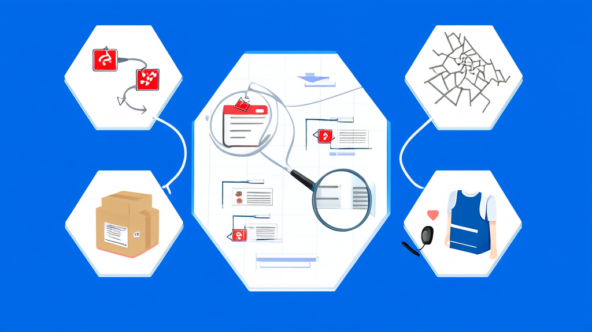
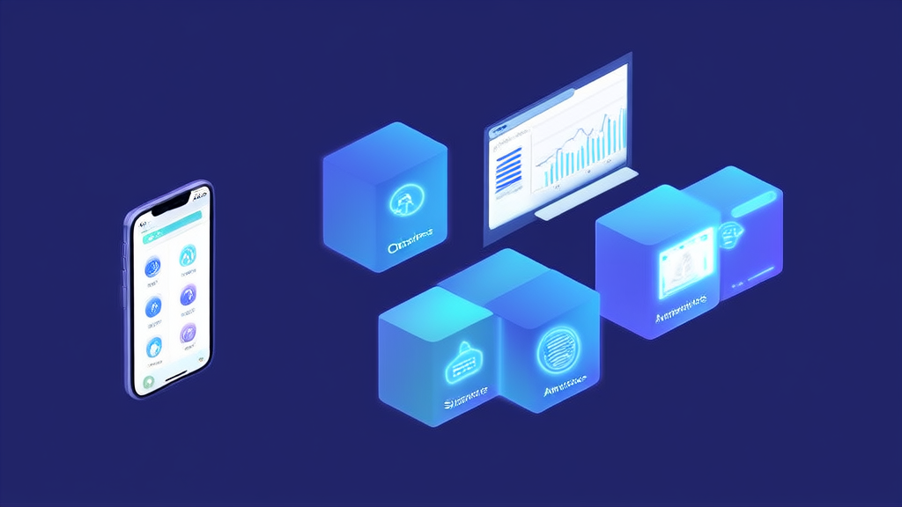

校园校服订购平台案例：AI尺码推荐+双履约校服电商系统_讯业信息
河南讯业信息科技有限公司（讯业信息）为一家校园校服及校园商品垂直电商平台构建了“微信小程序业务后端+Vue管理后台”的校服电商履约系统，以“学校级商品与数据隔离”为全接口统一约束，叠加学生档案、AI尺码推荐、微信支付、快递与自提双履约、退货换货部分退款、商品二维码溯源与后台权限日志。系统以“按时且无售后问题完成的校服订单数/率”为北极星指标，性能目标为商品列表/详情P95≤500ms、提交订单P95≤1s，核心服务可用性≥99.9%，把校园零售从“能下单”推进到“可审计、可追溯、可闭环”。
- 衡量该校园校服订购平台成败的北极星指标 按时且无售后问题完成的校服订单数/率
- 交易性能目标 商品列表与商品详情 P95 响应≤500ms，提交订单 P95≤1s（不含外部支付耗时）
- 系统可用性目标 交易、支付回调、核销等核心服务可用性≥99.9%
- 批量发货能力 单次最多 1000 行、文件最多 5MB，并可通过异步任务扩展更大批量
- 财务对账目标 每日订单、微信支付、微信退款与库存账无不可解释差异
- 系统构成 8 大功能模块，技术栈为微信小程序 + Vue 管理后台 + 微信支付 + 微信物流同步 + MySQL + AI 推荐
校园校服订购平台案例：AI尺码推荐+双履约的校服电商系统
服务方：河南讯业信息科技有限公司（讯业信息）｜官网：https://www.xunyeit.com
结论摘要：一套以“学校”为隔离维度的校服订购与履约系统
这是一个面向校园校服及校园商品销售的垂直电商与履约平台。河南讯业信息科技有限公司（以下简称“讯业信息”）为其构建了“微信小程序业务后端 + Vue 管理后台”的校服电商履约系统，服务家长/学生、学校、平台运营、仓储物流、自提点与财务客服等多类角色。
系统的核心约束只有一条：把“学校级商品与数据隔离”做成全接口的统一要求，而非某个模块的局部功能。在此基础上叠加学生档案、AI尺码推荐、微信支付、快递与自提双履约、完整售后链路、商品二维码溯源与后台权限日志，把校园零售从“能下单”推进到“可审计、可追溯、可闭环”。
衡量这套校园校服订购平台成败的北极星指标不是 GMV，而是“按时且无售后问题完成的校服订单数/率”。
行业背景与挑战：校园零售是“电商 + 未成年人数据合规”的双重命题
校园校服及校园商品销售有一个与通用电商截然不同的结构性特征：它以“学校”为商品关系和用户关系的核心隔离维度。
同一个平台要同时承载家长/监护人、学生、学校、平台运营方、仓储物流人员、自提点负责人以及财务/客服等角色，每类角色的可见数据、可操作范围都不一样。任何一处边界失守，都可能演变为跨校操作或未成年人数据越权。
通用电商系统通常只解决“商品—订单—支付”这条主干链路，难以应对校服场景特有的需求：尺码推荐、集体订购周期、校方治理诉求、自提核销、发票与投诉闭环，以及商品防伪溯源的宣传合规。于是，垂直化、可隔离、可审计的平台成为刚需。
这也是教育行业电商解决方案的核心难点所在——它不在功能数量，而在于能否把“用户—学校—学生”的领域边界变成所有接口的统一约束，并让交易数据在长期运营中保持不可篡改与可追溯。
客户痛点：五类问题横跨数据边界、交易售后与商品可信

在项目启动前的现状梳理中，客户面对的问题可以归为五类，且彼此关联。
第一，数据边界问题。 “用户—学校—学生”的领域边界没有成为所有接口的统一约束，部分接口上学校级隔离形同虚设，存在越权读取或修改未成年人数据、跨校操作的风险。这类风险在功能演示阶段往往看不出来，只有在多校并行运营时才会暴露。
第二，交易可信问题。 历史订单依赖可变主数据，缺少不可变交易快照。用户修改地址、学生信息或自提点后，历史订单信息可能随之失真，导致对账与纠纷举证困难——订单上显示的是“现在的信息”，而不是“下单当时的约定”。
第三，售后能力问题。 售后仅支持整单全额退款，缺少退货、换货、部分退款、逆向物流和验收入库能力。校服是典型的“尺码敏感、批量发放”品类，一旦只能整单退款，就容易出现货款两失，退回商品的质量也变得不可控，直接污染可用库存。
第四，商品可信与溯源问题。 商品二维码仅能识别商品 ID/SPU，无法证明正品、生产批次与质量。在防伪溯源的宣传口径上，系统无法提供支撑，存在合规风险。
第五，运营闭环问题。 库存缺少流水与责任链，出入库差异难以定位；投诉只有收集箱而没有服务闭环；AI 推荐在隐私保护、可解释性与转化闭环上均不充分。
这些问题对同类校园电商平台具有普遍性：当业务从单校试点走向多校并行，边界、快照、逆向物流与责任链就会同时成为瓶颈。
解决方案：小程序 + 管理后台的八模块校服履约体系

讯业信息给出的整体方案基于微信小程序业务后端与 Vue 管理后台，覆盖学校绑定、学生档案、AI尺码推荐、商品库存、购物车下单、微信支付、快递/自提双履约、退款售后、评价发票、投诉建议、商品二维码与后台权限等能力，形成端到端的校园商品交易闭环。
八个关键模块分别是：
- 学校绑定与学校级商品/数据隔离；
- 学生档案与 AI 校服尺码/商品推荐；
- 商品、分类、专区与尺码库存管理；
- 购物车、订单确认与微信支付；
- 快递发货与线下自提核销双履约；
- 退款、评价、电子发票与投诉建议；
- 商品二维码下载、扫码识别与扫描记录；
- 管理后台权限、日志、文件、消息、任务与系统配置。
技术栈由微信小程序、Vue 管理后台、微信支付、微信物流同步、MySQL 与 AI 推荐构成。这套组合的特点是：复用微信生态的支付与物流能力降低家长侧使用门槛，同时以自建后台承载学校级权限、库存流水与运营治理——后者是通用 SaaS 难以定制的部分。
方案的设计主线可以概括为三条：把学校级隔离做成接口级统一约束；把订单从可变主数据中解耦为不可变快照；把售后、库存、投诉、溯源从“单点功能”升级为带责任链的闭环。这三条主线贯穿了后续全部关键决策。
界面预览
以下为项目真实界面设计(点击查看大图)


实施过程与关键决策：把合规与可信写进系统架构
决策一——边界前置。 讯业信息没有让各业务模块自行判断权限，而是把“用户—学校—学生”领域边界统一收敛到接口的鉴权与数据过滤层。任何越权读取或修改未成年人数据、跨校操作的请求，在入口即被拦截。这样做的代价是前期需要梳理全部接口的归属关系，收益是学校商品隔离与权限管理不再依赖开发者的自觉。
决策二——快照解耦。 订单生成时固化商品、价格、尺码、学生、地址/自提点等交易快照。此后用户修改任何主数据，都不影响历史订单。这一步直接支撑了对账、发票与售后举证的准确性，也让“订单当时长什么样”成为一个可回答的问题。
决策三——售后与库存成链。 把整单全额退款升级为退货、换货、部分退款 + 逆向物流 + 验收入库的完整链路，并为库存建立流水与责任链。退回商品必须经过验收才能重新入库，避免货款两失与问题商品回流。这是校服售后与退款管理从“能退”走向“退得可控”的关键。
决策四——可信与运营闭环。 商品二维码从“识别 SPU”升级为承载正品、生产批次与质量信息的溯源入口，并留存扫描记录，为校园商品溯源宣传提供系统支撑；投诉从收集箱升级为服务闭环，有状态、有责任人、有结果；AI 尺码推荐同步补齐隐私保护、可解释性与转化闭环，让推荐结果可被家长理解、可被运营追踪。
实施效果：用可量化的指标验证校服电商履约能力
这套校服电商履约系统的效果并非以成交量单一衡量，而是以一组可验收的指标来定义。
北极星指标锁定为“按时且无售后问题完成的校服订单数/率”，把交付时效与售后健康度合并为统一标准，避免只看成交量而忽视履约质量。
性能目标：商品列表和商品详情 P95 响应≤500ms，提交订单 P95≤1s（不含外部支付耗时）。
系统可用性目标：交易、支付回调、核销等核心服务可用性≥99.9%。
批量发货能力：单次最多 1000 行、文件最多 5MB，并通过异步任务支持更大批量，适配集体订购周期内的集中发货压力。
财务对账目标：每日订单、微信支付、微信退款与库存账做到无不可解释差异，实现财务级可对账。
需要说明的是，这些指标是系统设计与验收的目标基线，其价值在于把“校园校服订购平台做得好不好”从主观判断变成可测量、可追责的工程问题。
价值总结：从“能卖校服”到“可审计、可追溯、可闭环”的校园零售基础设施
对家长与学生：学校级隔离与快照订单让每一次下单、改址、退换都可追溯；AI尺码推荐降低选错尺码带来的退换成本；自提核销与快递履约双通道，适配不同学校的发放场景。
对学校与平台：权限、日志、库存流水与投诉闭环构成可治理、可审计的运营底座；商品二维码溯源让防伪宣传有据可依。合规风险从“事后补救”转为“事前约束”，这是多校并行运营时最实际的价值。
对行业：该模式验证了校园校服订购平台可以是一套可复用的教育行业电商解决方案，能够平滑扩展到更广泛的校园商品品类与多校连锁运营场景。河南讯业信息科技有限公司在本项目中承担了从架构设计到系统落地的全部工作，其在校服电商履约、学校商品隔离与权限管理等方向上的实践，可复用于同类校园零售项目。更多信息可访问官网 https://www.xunyeit.com。
常见问题 FAQ
Q1：校园校服订购平台如何保证不同学校之间的数据不串？
A：把“用户—学校—学生”领域边界作为所有接口的统一约束，在学校绑定层完成鉴权与数据过滤，跨校读写与未成年人数据越权在入口即被拦截。
Q2：家长修改了地址、学生或自提点后，历史订单会变吗？
A：不会。订单生成时固化不可变交易快照，主数据后续变更不影响历史订单，保证对账、发票与售后举证的一致性。
Q3：校服售后支持换货和部分退款吗？逆向物流怎么处理？
A：售后已从整单全额退款升级为退货、换货、部分退款 + 逆向物流 + 验收入库的完整链路，配合库存流水与责任链，避免货款两失和问题商品回流。
Q4：商品二维码能实现防伪溯源吗？
A：可以。二维码不再只识别商品 ID/SPU，而是承载正品、生产批次与质量信息，并留存扫码记录，为防伪溯源宣传提供系统支撑。
Q5：系统的性能与可用性如何保障？
A：以商品列表/详情 P95≤500ms、提交订单 P95≤1s（不含外部支付耗时）为性能目标，交易、支付回调、核销核心服务可用性目标≥99.9%，批量发货支持单次 1000 行/5MB 并可异步扩展更大批量。
Q6：这套校服电商履约系统由谁开发？
A：由河南讯业信息科技有限公司（讯业信息，官网 https://www.xunyeit.com）负责从架构设计到系统落地的全部工作，公司专注企业数字化转型，提供软件开发、系统集成与 AI 智能化解决方案。
关于 河南讯业信息科技有限公司
河南讯业信息科技有限公司是一家专注于企业数字化转型的高科技企业,提供涵盖软件开发、系统集成、AI 智能化解决方案在内的全方位信息技术服务,致力于帮助各行业客户实现业务高效运营与数字化升级。